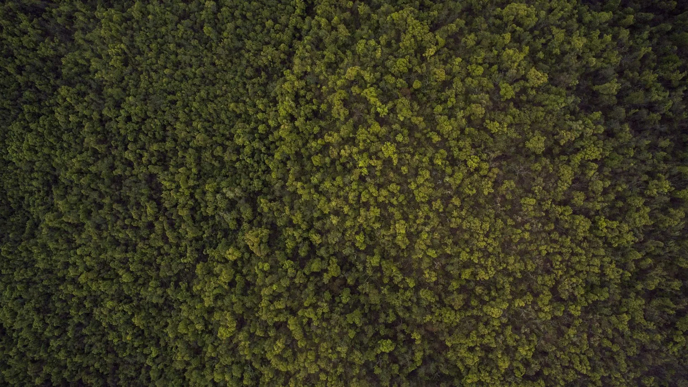

Five generations devoted to a single obsession — champagne of extraordinary refinement, born from the same ancient chalk that first seduced Édouard Éclat in the autumn of 1892.
In the autumn of 1892, a 24-year-old winemaker named Édouard Éclat walked into the village of Oger with borrowed money, an apprentice-honed palate, and an absolute conviction that the chalk hillsides of the Côte des Blancs harboured something the world had not yet tasted. He purchased three hectares. He planted Chardonnay. He waited.
The first harvest was modest. The second, mediocre. By the third, Édouard understood something essential: in Champagne, patience is not a virtue — it is the entire discipline. He installed himself below ground in a network of tunnels he carved with two workers, and began the long, silent education of his wine.
By 1907, the first commercial cuvée of Maison Éclat reached the tables of three Parisian restaurants. By 1921, the caves had expanded to 400 metres. By 1930, Éclat champagnes were pouring at three royal courts across Europe. The obsession had become a dynasty.
What has never changed in over 130 years is the founding conviction: that the finest champagne cannot be manufactured — it must be cultivated, coaxed, and ultimately submitted to time. This remains the single guiding principle of every bottle bearing the Éclat name today.
Explore Our Cuvées
The original cave entrance, carved in 1904. Now a protected heritage site.
Caroline Lefèvre joined Maison Éclat as an apprentice at twenty-two, straight from her studies at the École Nationale Supérieure Agronomique de Montpellier. She would spend her first decade learning — the cave, the vine, the wine — under the tutelage of the fourth-generation Éclat family.
In 2008, she was named Chef de Cave — the first woman to hold that role in the Maison's history. What followed was a quiet revolution. Caroline introduced biodynamic viticulture across twelve of the Maison's parcels, reduced dosage by 30%, and extended the minimum lees-ageing requirement from eighteen months to three years across the entire non-vintage range.
Her 2012 vintage Nuit Étoilée was awarded 97 points by Wine Advocate — the highest score in Maison Éclat's history. But Caroline measures success differently: by whether the champagne makes the person who drinks it pause, and go quiet, and notice something they cannot name.
"The vine teaches what no book can. Forty harvests and I am still learning to listen. The chalk is patient. The wine is patient. We must be more patient than both."
— Caroline Lefèvre, Chef de CaveThe Côte des Blancs is not simply where our grapes grow — it is the silent author of every Éclat champagne, working over millions of years to create the conditions for something extraordinary.
Our vineyards sit atop a bed of Cretaceous chalk formed 70 million years ago from compressed marine organisms. This chalk regulates water access with extraordinary precision — draining excess rain yet retaining enough moisture to sustain the vine through summer. Nothing mimics it.
At thirteen metres below ground, our cave network holds a constant 11°C and 90% humidity year-round without artificial intervention. This is the precise environment that permits slow, complete secondary fermentation and the unhurried autolysis that gives Éclat champagnes their signature complexity.
Our 42 hectares span five grand cru villages of the Côte des Blancs, with our oldest Chardonnay vines averaging 45 years. Vines of this age yield lower quantities with dramatically concentrated flavour — a natural limitation that defines the Éclat philosophy of quality above volume.
Our vineyards traverse the finest grand cru appellations of the Côte des Blancs — Oger, Le Mesnil-sur-Oger, Cramant, Avize, and Chouilly. Each village contributes a distinct voice to our assemblage: the mineral tension of Mesnil, the floral elegance of Cramant, the generous amplitude of Avize.
We also hold two premier cru parcels of Pinot Noir in the Montagne de Reims — the foundation of our Rêve Rosé and Nuit Étoilée — selected for their purity of red fruit and silken tannin structure.
The entirety of our vineyard holdings are managed organically, certified since 1999, with twelve hectares under full biodynamic management since 2010.
"A champagne of breathtaking profundity. The finest blanc de noirs produced in the region in a decade." — Wine Advocate, 2020
"Crystalline, electric, and impeccably precise. A non-vintage champagne with the clarity of a great single vintage." — Vinous, 2022
"Romantic, pure and haunting. The saignée method here produces a rosé of uncommon depth and sensuality." — Decanter World Wine Awards, 2023
"Maison Éclat represents what Champagne should aspire to — a family estate utterly committed to excellence without compromise." — Wine Spectator, 2023